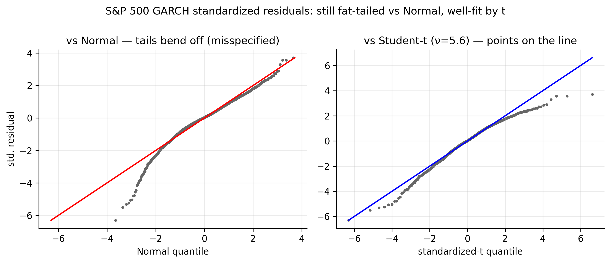
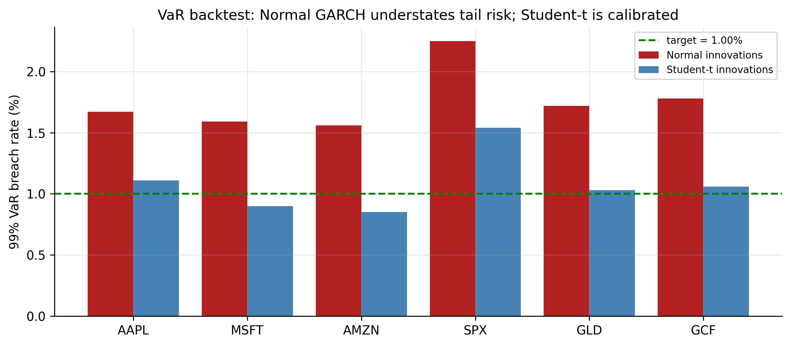

10 Estimating and Evaluating Volatility Models
So far we have fitted GARCH models by, in effect, pressing a button: choose an order, run the estimator, read off the numbers. This chapter slows down and answers the four practical questions that turn button-pressing into real modelling:
- How do you build a volatility model properly, step by step?
- What is the computer actually doing when it “estimates” one?
- Why is the usual bell-curve assumption wrong, and what do we use instead?
- How do you know whether your model is any good?
We answer each in plain terms and carry the S&P 500 through as a running example. Nothing here is new mathematics; it is the discipline that makes the models of the last two chapters trustworthy.
A volatility model has two halves: a mean part (what return do we expect tomorrow?) and a variance part (how big a swing around that expectation?). The mean part we already know is nearly a flat line. This chapter is almost entirely about getting the variance part — and the shape of the surprises around it — right, and then checking it with a risk number a practitioner can actually use.
10.1 A recipe for building a volatility model
Building a volatility model is a four-step recipe, and the steps are the same whether the variance equation is ARCH or GARCH.
Step 1 — Model the average, then check whether volatility clusters. First fit a simple mean model to the returns (for us, just their average, because Chapters 3–5 showed daily returns are almost unforecastable). Subtract it to get the “surprises” \(\hat a_t\) — the part of each day’s return the mean did not predict. Then test those surprises for volatility clustering with the ARCH-LM test (Section 8.3). If there is no clustering, you are done — no volatility model is needed. For every one of our series there is a lot of it (Table 8.1), so we continue.
Step 2 — Choose the volatility equation and how big it should be. Decide between ARCH and GARCH and pick the order. For ARCH you count the significant lags in the squared surprises (it is usually many — four to ten). For GARCH the answer is easy: GARCH(1,1) almost always works, and bigger versions rarely help.
Step 3 — Let the computer find the best-fitting numbers. This is estimation — the computer searches for the parameter values that best explain the data (Section 10.2 explains exactly how).
Step 4 — Check the leftovers. Divide each surprise by the volatility the model assigned to that day: \(\hat\varepsilon_t = \hat a_t / \hat\sigma_t\). These standardised residuals are what should be left if the model captured everything — pure, structureless noise. We check that with two Ljung–Box tests: one on \(\hat\varepsilon_t\) (is there leftover direction the mean missed?) and one on \(\hat\varepsilon_t^2\) (is there leftover clustering the variance missed?). Both should come back insignificant. A picture of \(\hat\varepsilon_t\) (a QQ plot) then tells us whether we picked the right shape for the surprises — and, as we will see, it usually says we did not.
library(rugarch)
est_return <- function(sym) {
d <- read.csv(sprintf("data/%s.csv", sym)); d$Date <- as.Date(d$Date)
diff(log(d$Adjusted[d$Date <= as.Date("2026-07-01")]))
}
# Steps 1-3: constant mean + GARCH(1,1), fitted together
spec <- ugarchspec(mean.model = list(armaOrder = c(0, 0)),
variance.model = list(model = "sGARCH", garchOrder = c(1, 1)),
distribution.model = "norm")
fit <- ugarchfit(spec, est_return("SPX"))
# Step 4: the leftovers should be structureless
z <- residuals(fit, standardize = TRUE)
Box.test(z, lag = 10, type = "Ljung-Box") # leftover direction?
Box.test(z^2, lag = 10, type = "Ljung-Box") # leftover clustering?import pandas as pd, numpy as np
from arch import arch_model
from statsmodels.stats.diagnostic import acorr_ljungbox
def est_return(sym):
d = pd.read_csv(f"data/{sym}.csv", parse_dates=["Date"]).set_index("Date")
return np.log(d[d.index <= "2026-07-01"]["Adjusted"]).diff().dropna()
res = arch_model(est_return("SPX")*100, mean="Constant",
vol="GARCH", p=1, q=1, dist="normal").fit(disp="off")
z = res.std_resid
print(acorr_ljungbox(z, lags=[10])) # leftover direction?
print(acorr_ljungbox(z**2, lags=[10])) # leftover clustering?Run this on the S&P and Steps 1–3 go through cleanly, but Step 4 raises a flag: the leftovers pass the clustering check (the GARCH did its job) yet fail a shape check — they are too extreme too often for a bell curve. Holding that thought, let us first make Step 3 concrete.
10.2 What “estimating” the model means
Estimation sounds mysterious but the idea is simple. We have a model with a few unknown dials — for GARCH(1,1) they are \(\alpha_0\), \(\alpha_1\), \(\beta_1\). Different dial settings imply a different volatility path \(\sigma_t\) for every day, and therefore say the returns we actually observed were more or less likely. Maximum likelihood just turns the dials to the setting that makes the observed returns as likely as possible.
Of all the parameter settings we could choose, pick the one under which the data we actually saw would have been the least surprising.
Concretely, once the dials are fixed we can compute the volatility \(\sigma_t\) for every day (it is just the GARCH recursion), and then score how well each day’s return fits. Under a bell curve the total score — the log-likelihood — is
\[ \ell(\theta) = -\frac{1}{2}\sum_{t=1}^{T} \left[\ln(2\pi) + \underbrace{\ln\sigma_t^2}_{\text{penalty for claiming big risk}} + \underbrace{\frac{a_t^2}{\sigma_t^2}}_{\text{penalty for being surprised}}\right]. \tag{10.1}\]
The two penalty terms pull against each other, and that tension is the whole trick. If the model sets \(\sigma_t\) too small on a day with a big move, the second term (\(a_t^2/\sigma_t^2\)) blows up — it was caught off guard. If it sets \(\sigma_t\) too large everywhere to stay safe, the first term (\(\ln\sigma_t^2\)) piles up — it is crying wolf. The best fit threads between them: small volatility on calm days, large on turbulent ones — exactly the clustering GARCH is built for. There is no formula that solves this in one step, so the software searches numerically, keeping the dials in the sensible range (\(\alpha_0>0\), weights \(\ge 0\), persistence below 1).
10.3 A simpler shortcut: two-pass estimation
Step 3 estimates the mean and variance dials together. A simpler, sturdier alternative estimates them in two passes:
- Pass 1 — fit the mean model on its own and keep the surprises \(\hat a_t\).
- Pass 2 — fit the GARCH to those surprises.
Think of it as doing the easy half first (find the average) and then the hard half (model the swings) using what the first pass left behind. It is easier for the computer and less likely to get stuck, giving up only a little accuracy because it does not let the two halves talk to each other.
For our data the two approaches give essentially the same answer, and it is worth seeing why: the mean of daily returns is basically a constant (returns are near white noise), so “Pass 1” is nothing more than subtracting the average. That is precisely what we have been doing — fitting GARCH to demeaned returns — so we have been using the two-pass method all along without naming it. The distinction only starts to matter when the mean has genuine ARMA structure.
mean_fit <- arima(est_return("SPX"), order = c(0, 0, 0)) # Pass 1: the mean
a_hat <- residuals(mean_fit) # the surprises
ugarchfit( # Pass 2: GARCH on surprises
ugarchspec(mean.model = list(armaOrder = c(0, 0), include.mean = FALSE),
variance.model = list(model = "sGARCH", garchOrder = c(1, 1))),
a_hat)from statsmodels.tsa.arima.model import ARIMA
a_hat = ARIMA(est_return("SPX"), order=(0, 0, 0)).fit().resid # Pass 1
res2 = arch_model(a_hat*100, mean="Zero", vol="GARCH", p=1, q=1).fit(disp="off") # Pass 210.4 Fixing the shape of the surprises: Student-\(t\) innovations
Now back to the flag Step 4 raised. After a Gaussian GARCH fit, the leftovers \(\hat\varepsilon_t\) should look like draws from a standard bell curve. They do not. They are fat-tailed — extreme values show up far more often than a bell curve allows. Figure 10.1 (left) shows it plainly: if the leftovers were normal, the grey dots would lie on the straight line, but in the tails they peel sharply away.

This is the other half of a story we started in Chapter 2. Back then the raw returns looked fat-tailed, and we said the fatness had two causes: volatility that comes and goes, and genuinely extreme surprises. GARCH has now handled the first cause — the varying volatility. What is left over in \(\hat\varepsilon_t\) is the second: the surprises themselves are heavier-tailed than a bell curve.
The fix is to stop assuming a bell curve and instead assume the surprises follow a Student-\(t\) distribution, which is bell-shaped in the middle but with fatter tails. It has one extra dial, the degrees of freedom \(\nu\), which controls tail fatness:
\[ \varepsilon_t \sim t_\nu \;(\text{scaled to unit variance}), \qquad \text{excess kurtosis} = \frac{6}{\nu - 4}. \tag{10.2}\]
A small \(\nu\) means very fat tails; as \(\nu\) grows the \(t\) becomes the ordinary bell curve. We simply add \(\nu\) to the list of dials and re-estimate. The improvement is dramatic:
| Ticker | fitted \(\nu\) | how fat the leftovers still are (excess kurtosis) | model improvement (\(\Delta\)BIC, \(t\) vs bell curve) |
|---|---|---|---|
| AAPL | 4.4 | 3.45 | −388 |
| MSFT | 4.4 | 5.80 | −482 |
| AMZN | 4.4 | 6.85 | −552 |
| SPX | 5.6 | 2.15 | −222 |
| GLD | 5.0 | 2.68 | −284 |
| GCF | 4.2 | 3.83 | −411 |
Read the table left to right. The fitted \(\nu\) is between 4 and 6 for every series — very fat tails (a bell curve is \(\nu=\infty\)). The middle column shows that even after GARCH, the leftovers carry excess kurtosis of 2 to 7, confirming the bell curve was wrong. And the last column is the verdict: switching to \(t\) lowers BIC by 220 to 550 points — an enormous margin (a difference of 10 is already decisive). Figure 10.1 (right) seals it: against the fitted \(t\), the dots line up. For daily returns, Student-\(t\) surprises are not a nicety; they are the correct choice.
spec_t <- ugarchspec(mean.model = list(armaOrder = c(0, 0)),
variance.model = list(model = "sGARCH", garchOrder = c(1, 1)),
distribution.model = "std") # "std" = Student-t surprises
fit_t <- ugarchfit(spec_t, est_return("SPX"))
fit_t # reports the shape parameter (nu)res_t = arch_model(est_return("SPX")*100, mean="Constant",
vol="GARCH", p=1, q=1, dist="t").fit(disp="off")
print(res_t.summary()) # 'nu' is the fitted degrees of freedom10.5 Is the model any good? Backtesting Value-at-Risk
Value-at-Risk (VaR) is a loss line for a given confidence level: the 99% VaR is a loss you should exceed only about 1 day in 100. Backtesting counts how often you actually breach it.
A model is only as good as its forecasts, and for a risk model the sharpest test is Value-at-Risk (VaR). In plain words, the one-day 99% VaR is a loss line you should only cross about 1 day in 100:
\[ \text{VaR}_t(1\%) = \mu + \sigma_t\, q_{1\%}, \tag{10.3}\]
where \(q_{1\%}\) is the 1%-point of the surprise distribution — a modest number under the bell curve, a bigger (more negative) one under the fatter \(t\). Each day the model draws this line using that day’s forecast volatility \(\sigma_t\), so the line moves: tight in calm times, wide in turbulent ones.
Testing it is refreshingly concrete. Draw the line every day, then simply count how often the actual return fell below it. If the model is honest, that should happen about 1% of the time. This count is called a backtest, and it is where the choice of surprise distribution shows its teeth.

| Ticker | crossings under bell curve | crossings under Student-\(t\) | promised |
|---|---|---|---|
| AAPL | 1.67% | 1.11% | 1.00% |
| MSFT | 1.59% | 0.90% | 1.00% |
| AMZN | 1.56% | 0.85% | 1.00% |
| SPX | 2.25% | 1.54% | 1.00% |
| GLD | 1.72% | 1.03% | 1.00% |
| GCF | 1.78% | 1.06% | 1.00% |
The message of Table 10.2 is blunt and it costs money. The bell-curve VaR is crossed far too often — 1.6% to 2.25% of days instead of 1%, more than double for the S&P. That means it draws its loss line too close to zero, and reality punches through it far more than the model claims: a desk trusting it would be running about twice the tail risk it thinks it is. Switching to Student-\(t\) surprises pulls every crossing rate back toward the promised 1%. This is the concrete, dollars-and-cents reason the whole volatility exercise matters, and the reason \(t\) is standard in practice: it converts a comfortable-looking but dangerously optimistic risk number into an honest one.
The VaR count is the most intuitive check, but not the only one. You can also compare the model’s variance forecasts to the realised variance (using squared or intraday returns) with error scores like MSE or QLIKE, decide between two models with a Diebold–Mariano test, and test VaR coverage formally with Kupiec’s test. The backtest above is the one a practitioner reaches for first.
10.6 Concept check
Decide first, then expand each answer.
Q1. What is the very first step in building a volatility model?
- (a) Estimate \(\alpha_1\) and \(\beta_1\).
- (b) Fit a mean model and test its surprises for volatility clustering — if there is none, no volatility model is needed.
- (c) Compute Value-at-Risk.
- (d) Difference the series.
(b). Model the average first, then test the leftovers for an ARCH effect. Only if volatility clusters do you go on to a variance model.
Q2. In plain terms, what does maximum-likelihood estimation do?
- (a) Picks the parameters that make the data we actually observed as likely as possible.
- (b) Minimises the mean of the returns.
- (c) Guarantees a normal distribution.
- (d) Removes the trend.
(a). It turns the model’s dials to the setting under which the observed returns would have been least surprising. The GARCH recursion makes this a numerical search, not a one-step formula.
Q3. The “two-pass” method estimates the model by:
- (a) running the data through twice for accuracy.
- (b) fitting the mean first, then fitting GARCH to the leftovers — simpler and sturdier, and identical to joint estimation when the mean is just a constant.
- (c) estimating the variance two different ways.
- (d) using two datasets.
(b). Pass 1 finds the average; Pass 2 models the swings in what is left. For our near-constant mean it matches joint estimation exactly.
Q4. After a Gaussian GARCH fit, the leftovers still have fat tails. The fix is to:
- (a) add more GARCH lags.
- (b) assume the surprises follow a fatter-tailed Student-\(t\) instead of a bell curve.
- (c) difference the returns.
- (d) drop the mean model.
(b). GARCH fixed the changing volatility; the leftover fatness is in the surprises themselves. A Student-\(t\) (small \(\nu\) = fat tails) matches them.
Q5. A 99% VaR is crossed on 2.25% of days. What does that say about the model?
- (a) It is too cautious.
- (b) It understates risk — reality crosses the loss line more than twice as often as promised, because the assumed tails are too thin.
- (c) It is perfectly calibrated.
- (d) Its mean is wrong.
(b). A crossing rate above the target means the loss line sits too close to zero. Fatter (\(t\)) tails widen it and restore ~1% coverage.
- Build a volatility model in four plain steps: model the average and test for clustering → choose the variance equation and order → let the computer estimate it → check that the leftovers are structureless.
- Estimation = maximum likelihood: pick the dials that make the observed returns most likely (Equation 10.1), balancing “don’t claim big risk” against “don’t get caught out.” The two-pass shortcut (mean, then variance) matches it when the mean is near-constant, as ours is.
- The surprises are fat-tailed even after GARCH, so use Student-\(t\) ones (Equation 10.2): \(\hat\nu\approx 4\)–\(6\) here, improving BIC by \(220\)–\(550\) (Table 10.1).
- Backtest the VaR to grade the model: the bell curve crosses its 99% line \(1.6\)–\(2.25\%\) of days (understating risk); Student-\(t\) restores ~1% (Table 10.2).
- Standard GARCH is still symmetric — up and down shocks count the same. Relaxing that, plus other extensions, comes next.